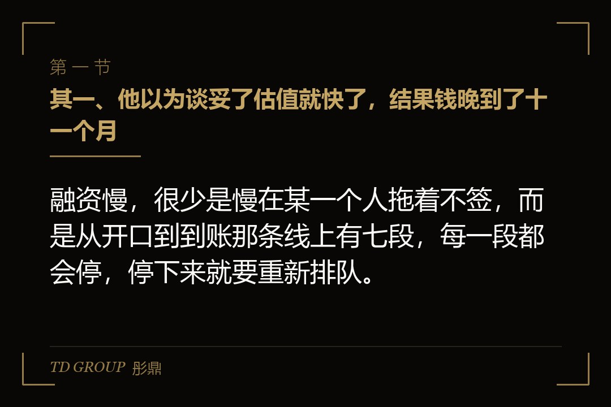
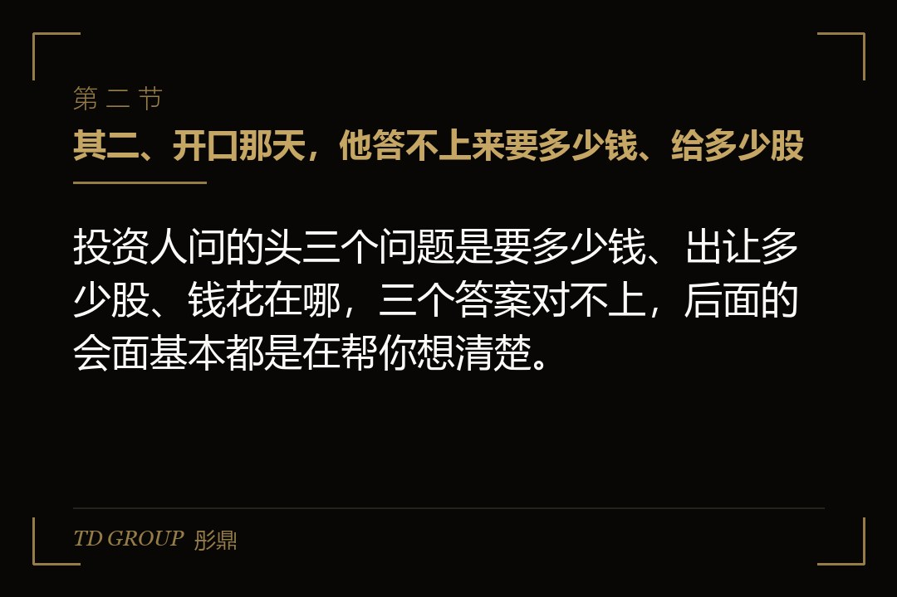
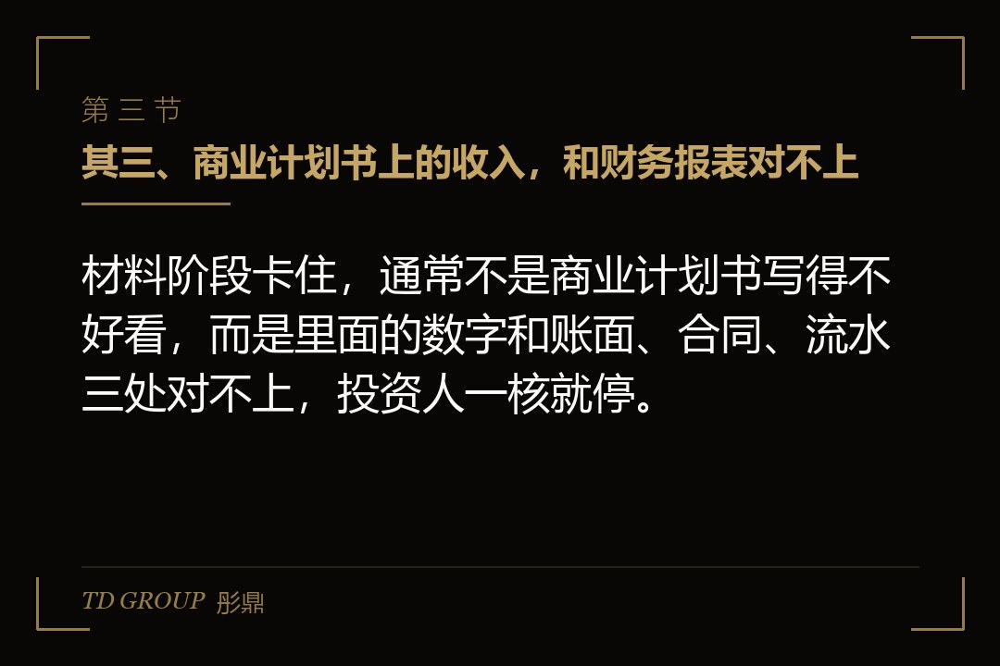

其一、他以为谈妥了估值就快了，结果钱晚到了十一个月

结论先行：融资慢，很少是慢在某一个人拖着不签，而是从开口到到账那条线上有七段，每一段都会停，停下来就要重新排队。
假设有家做工业视觉检测设备的企业，年营收一亿出头，刚刚打平。创始人老周决定融一轮，理由很直接：两家大客户同时要求扩产，新产线要钱，研发团队也要加人。他算了算，年底前把钱拿到，明年的订单就接得住。
他在春节后开始约人，四月拿到一家基金的条款清单，估值比他预期的还高一点。他跟团队说，最多两个月钱就能到。结果增资款真正打进公司账户，是第二年一月，离他开口过去了十一个月。
这十一个月里没有人故意拖他。事后复盘，这轮融资一共在七个地方停过，有的停了一周，有的停了三个月。最要命的是后几段，那时候他已经按「钱快到了」签了设备采购合同，账上的钱只够再撑两个多月。
下面顺着老周这条线往下走。每一段只讲清楚卡在哪、为什么卡，具体条款和尽调的细节，站上另有专门的文章，这里不重复展开。
其二、开口那天，他答不上来要多少钱、给多少股

结论先行：投资人问的头三个问题是要多少钱、出让多少股、钱花在哪，三个答案对不上，后面的会面基本都是在帮你想清楚。
老周最初报的是八千万，理由是同行上一轮融了这么多。投资人接着问，这八千万里产线多少、研发多少、补流动资金多少，他给的拆分每次见面都不一样。有一次他说产线要五千万，下一次又说设备可以租，三千万就够。
出让比例也一样。他心里想的是不超过两成，但八千万除以两成，倒推出来的投后估值是四个亿，这个数字他自己也觉得偏高。于是有的场合他说「估值可以谈」，有的场合又说「低于三个半亿不考虑」。
投资人听到的，是一个还没想清楚的创始人。前面五六次会面，对方都很客气，回去之后没有下文。其实不是项目不行，是对方判断：这家公司要先自己把账算明白，现在进去，谈到后面价格和金额都会变。
这一段要准备的东西不多，但必须先有：未来十八到二十四个月的资金需求表，逐项写清楚花在哪、什么时候花；由此倒推的融资区间；以及能接受的出让比例区间。三样数字能互相对上，后面每一段都会顺很多。
其三、商业计划书上的收入，和财务报表对不上

结论先行：材料阶段卡住，通常不是商业计划书写得不好看，而是里面的数字和账面、合同、流水三处对不上，投资人一核就停。
老周的商业计划书是市场部做的，写着去年营收一亿二千万。投资经理要来审计报告一看，是一亿零四百万。差出来的一千六百万，是几笔已经签了合同、设备也发了货、但客户还没验收的订单。
市场部按签单算，会计按验收确认收入，两边都没错，可放在同一份材料里，投资人看到的就是一个数字被抬高了。对方没有直接说不信，只是把要的材料清单拉长了一倍：分客户的收入明细、合同、验收单、回款记录。
材料一来一回就是一个月。更麻烦的是，客户明细一拉出来，前两大客户占了营收的六成，这件事商业计划书里没写，投资经理是自己算出来的。等于老周在还没进尽调之前，就先丢了一分信任。
这一段该做的，是在对外发任何材料之前，让财务把商业计划书里每一个数字对一遍：营收按哪个口径、毛利率怎么算、客户集中度多少、订单和收入分开写。数据室里放什么、怎么分层开放，可以参考站上专讲数据室的那篇。
其四、见了二十多家，一大半从一开始就投不了他
结论先行：投资人初筛时说「再看看」，很多时候不是在评估项目好坏，而是这家基金的阶段、行业、单笔规模或者存续期，本来就对不上。
老周前后见了二十多家机构。复盘时他把每家的反馈排了一遍，发现有七八家是专投早期的，单笔只出一两千万；有几家是消费和互联网方向的，对工业设备没有判断能力；还有两家的基金快到退出期了，已经不再投新项目。
这些机构都认真听完了，也都说「很有意思，我们内部再讨论一下」。老周因此在它们身上各花了两三周，等回复、补材料、约第二次会面。这些时间加起来，差不多是两个月。
投资人不会一开口就说「我们投不了」，这是行业里的礼貌，也是给自己留个选项。所以筛人这件事得由融资方先做：这家基金主投哪个阶段、看不看你的行业、单笔通常出多少、现在处在投资期还是退出期、近一两年有没有投过类似的公司。
五个问题答不上来的，先不要约正式会面。真正该花时间的，是那几家条件都对得上、又愿意做领投的机构。这一段省下来的时间，后面几段都用得上。
其五、条款清单他只看了估值那一行
结论先行：条款清单里真正决定后面日子怎么过的，常常不是估值，而是回购、清算优先、一票否决和排他期这几条，而这些条款在签的时候最容易被放过。
四月那份条款清单，估值给了三亿八千万，老周很满意，一周就签了。签完才发现，里面有一条六十天的排他期：这段时间他不能再跟其他机构谈，而对方写明了除保密和排他以外，其余条款都不具有法律约束力。
也就是说，投资方锁住了他，他却没有锁住投资方。排他期内，对方可以慢慢做尽调，可以在正式协议里重新提条件，他连个对照报价都拿不出来。
另外几条他当时也没细看：未来一定期限内没有上市就要创始人个人回购、公司清算或者被收购时投资人优先拿回本金加一定回报、十几类事项要投资人董事同意才能做。这些条款后来在正式协议阶段一条条被写实，老周想改的时候，已经没有筹码了。
所以签条款清单那一刻，比签正式协议更值得慢下来。哪几条有约束力、排他期多长、排他期结束对方没给结论怎么办，这几件事要先谈清楚。条款怎么逐条看，站上有专讲条款清单几处要害的文章。
其六、尽调翻出三件事，估值被砍了一成半
结论先行：尽调阶段最常见的结果不是项目被否，而是投资方拿发现的问题重新谈价格或者追加条件，而这些问题大多是公司自己早就知道的。
投资方请的律师和会计师进场三周，列出了三件事。其一，公司有一部分员工的社保公积金一直按最低基数交，追溯补缴有一笔不小的数。其二，前两年有几笔货款是打到老周个人卡上再转回公司的。其三，公司最核心的一项发明专利，申请人和权利人至今还是老周本人。
三件事单独看都不致命，也都能整改。但投资方的态度变了：补缴的钱要从估值里扣，个人卡收款要做专项核查，专利必须在交割前转到公司名下，否则不付款。最后谈下来，估值从三亿八千万降到三亿二千万，还多了一条专项赔偿。
老周很委屈，说这些问题投资经理一开始来厂里的时候他就提过。可提过和写进材料是两回事。当时只是聊天里带了一句，没有数字、没有整改方案，到了尽调报告里，就成了「新发现的风险」，谈判的主动权也跟着换了边。
这一段真正能做的准备在尽调之前：自己先请律师和会计师做一次预查，查出来的问题能改的先改，改不完的把影响算清楚、主动写进披露。尽调之后怎么重新谈价格，站上另有专门的文章。
其七、协议签了，钱还是不付，因为先决条件没满足
结论先行：正式投资协议签完不等于钱会来，协议里写的交割先决条件要逐条满足，其中牵涉第三方签字、登记和审批的，往往最拖时间。
八月底，正式投资协议签了。老周以为这次真的快了，协议里却列了九条交割先决条件：专利转让完成登记、原股东签署放弃优先认缴的文件、股东会通过增资和修改章程的决议、核心员工签竞业协议、个人卡收款完成核查，等等。
卡住最久的是两条。专利转让要到知识产权部门办登记，材料被退回补正了一次，前后将近两个月。另一条是一位早年进来的小股东，持股不到百分之三，常年在外地，联系了一个多月才签回放弃优先认缴的文件。
按公司法，有限公司增加注册资本，原股东在同等条件下有权按实缴出资比例优先认缴，除非全体股东另有约定；增资和修改章程的决议，要经代表三分之二以上表决权的股东通过。老周持股过了三分之二，决议本身不难，难的是那一份放弃文件。
这一段该提前做的，是在签正式协议之前，就把先决条件逐条列出来，标清楚哪条靠自己、哪条要第三方、各要多久。牵涉外部部门和联系不上的老股东的，开始谈条款清单时就该动手，而不是等协议签了再去找人。
其八、最后一段：登记和到账，还要一个多月
结论先行：先决条件全部满足后，付款还要走工商变更、境外资金的信息报告和外汇登记等手续，这些时间要写进资金计划，不能按签约日算到账日。
投资方里有一家是美元基金，通过境外主体投进来。这部分资金入境，公司要先完成工商变更登记，再通过登记系统报送外商投资信息，并到银行办理直接投资项下的外汇登记，开好资本金账户，钱才能汇进来。
老周的财务以前没办过这类手续，材料在银行退了两次。人民币基金那部分付得快一些，但它的合伙协议规定，要等全部先决条件满足、并收到公司的书面确认后若干个工作日内付款。两笔钱前后差了三周，全部到账是第二年一月。
这时候老周账上的钱已经见底，设备款是靠一笔短期借款先顶上的。这笔借款的利息，还有那几个月因为缺人没能按时交付的两单订单，都是这轮融资真实的成本，只是没有写在任何一份协议里。
所以资金计划里的到账日，要按「先决条件满足日加登记和付款流程」来算。有境外资金的，外汇登记和账户开立要提前跟银行沟通；有多家投资方的，要看清每家合伙协议里的付款条件。具体流程以登记机关、商务和外汇管理部门的现行规定为准。
其九、回头看这十一个月，每一段该提前多久
结论先行：把一轮融资的七段按时间倒排，能提前做的事大多在开口之前，而真正决定哪天到账的，是你哪天开始准备，不是哪天签字。
老周后来复盘时说，如果重来一次，他会在开口前三个月做三件事：让财务把资金需求表和商业计划书里的数字对齐；请律师和会计师做一次预查，把社保、个人卡、专利这几件事先处理掉；再列一张目标投资人名单，把阶段、行业、单笔规模对不上的先划掉。
条款清单那一段，他会把排他期谈短，并且写清楚排他期结束没有结论就自动失效。正式协议之前，他会把先决条件逐条排好期，老股东的放弃文件、专利转让这种要找人、要排队的事，提前两个月开始办。
我们跟华尔街俱乐部有合作，在那边听过不少创始人讲自己的融资，卡住的地方跟老周大同小异：很少有人是被一个坏条款打败的，多数是被时间拖垮的。账上的钱每个月都在少，而融资流程里的每一段，都不会因为你着急就变快。
所以判断自己卡在哪一段，可以问自己几个问题：要多少钱、给多少股、花在哪，三个数对得上吗？对外材料里的数字，财务核过吗？正在谈的机构，阶段和规模对得上吗？条款清单里有约束力的是哪几条？先决条件里要找第三方的有几条、各要多久？
最后留一个问题。要是你现在就开口融资，按账上的钱倒着算，再给后面几段各留出余量，你最晚哪一天必须拿到条款清单？这个日子如果已经过了，你打算先砍支出，还是先找一笔过桥的钱？